In this exercise, you’ll explore the river dataset which will be used throughout this chapter to illustrate the use of common anomaly detection techniques. The river data is a data.frame that contains the following three columns:
index - integers describing the order of the nitrate observations nitrate - monthly concentrations of dissolved nitrate found in a river month - a factor containing the month for each nitrate observation You will explore the nitrate column using summary statistics and boxplots to assess whether there may be point anomalies present.
# Summary statistics of river nitrate concentrationssummary(river$nitrate)
Min. 1st Qu. Median Mean 3rd Qu. Max.
0.5920 0.9485 1.0680 1.0649 1.1700 1.8970
# Plot the distribution of nitrate concentrationboxplot(river$nitrate)
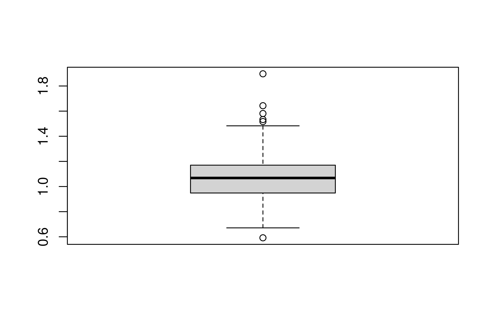
Visual check of normality
Before using Grubbs’ test, you should first check that the observations are plausibly normal. The hist() function in R returns a histogram of the observations, which will help you to form a judgement about the normal assumption. hist() is used as follows
hist(data, xlab = “My x-axis label”, breaks = 30)
data is a vector of numeric values breaks the number of break points used to assign the data to bins xlab an optional character string for the x-axis label
# Separate the histogram into 40 bins hist(river$nitrate, xlab ="Nitrate concentration", breaks =40)
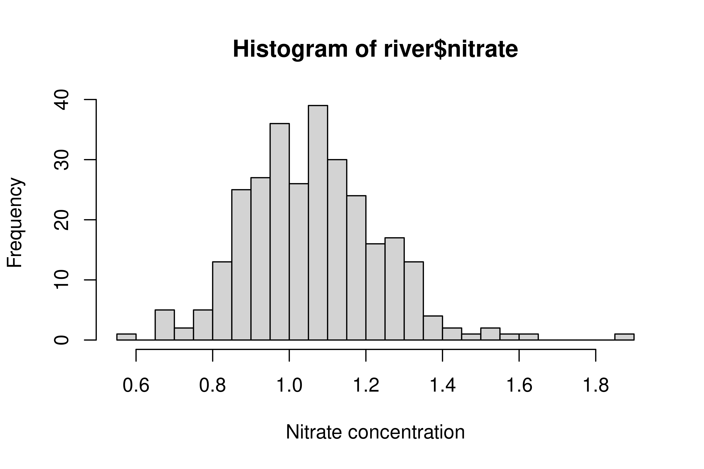
Grubbs’ test
We’ve now checked that the data are normal. Now let’s apply Grubbs’ outlier test!
Grubbs’ test assesses whether the value that is farthest from the mean is an outlier - the value could be either the maximum or minimum value. The test is performed using the grubbs.test() function from the outliers package:
grubbs.test(x)
x is the input data as a numeric vector
# Apply Grubbs' test to the river nitrate datagrubbs.test(river$nitrate)
Grubbs test for one outlier
data: river$nitrate
G = 4.72676, U = 0.92269, p-value = 0.000211
alternative hypothesis: highest value 1.897 is an outlier
You can now use Grubbs’ test to check for single outliers. Remember, the lower the p-value returned by the test, the higher the likelihood that the point tested was an outlier.
Hunting multiple outliers using Grubbs’ test
Grubbs’ test found that the maximum value could be an outlier, but what if there are more? Further outliers can be found by repeating Grubbs’ test, after removing any previously identified outliers from the data.
To identify the point that was tested, the which.min() or which.max() functions can be used to find the index containing the largest or smallest value - remember we know which of these it is from the Grubbs’ test output.
# Apply Grubbs' test to the nitrate datagrubbs.test(river$nitrate)
Grubbs test for one outlier
data: river$nitrate
G = 4.72676, U = 0.92269, p-value = 0.000211
alternative hypothesis: highest value 1.897 is an outlier
# Use which.max to find row index of the maxwhich.max(river$nitrate)
[1] 156
# Runs Grubbs' test excluding row 156grubbs.test(river$nitrate[-156])
Grubbs test for one outlier
data: river$nitrate[-156]
G = 3.42983, U = 0.95915, p-value = 0.07756
alternative hypothesis: highest value 1.643 is an outlier
# Print the value tested in the second Grubbs' testmax(river$nitrate[-156])
[1] 1.643
Visual assessment of seasonality
The first step when analyzing time series should be to construct graphical summaries that provide insight into important features such as trend, seasonality and possible anomalies. In this exercise, you’ll use several plots to explore thenitrate concentrations as a time series and to identify the period of any seasonal patterns that might be present.
# View contents of datasethead(river)
nitrate months index
1: 1.581 January 1
2: 1.323 February 2
3: 1.140 March 3
4: 1.245 April 4
5: 1.072 May 5
6: 1.483 June 6
# Show the time series of nitrate concentrations with timeplot(nitrate ~ index, data = river, type ="o")
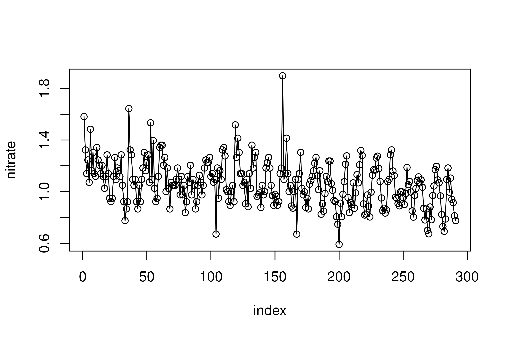
# Create a boxplot of nitrate against monthsboxplot(nitrate~months, data = river)
Plot the monthly means
# Calculate the mean nitrate by monthmonthly_mean <-tapply(river$nitrate, river$months, FUN = mean)monthly_mean
April August December February January July June March
1.0166250 0.9380833 1.2264167 1.1838400 1.2163600 0.9810417 0.9792083 1.1050400
May November October September
0.9978333 1.0962500 1.0360000 0.9885833
# Plot the monthly means plot(monthly_mean, type ="o", xlab ="Month", ylab ="Monthly mean")
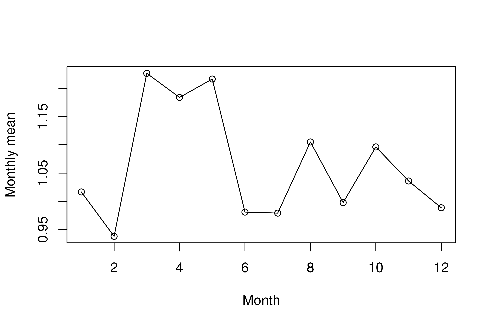
Create a boxplot of nitrate against months
# Create a boxplot of nitrate against monthsboxplot(nitrate~months, data = river)
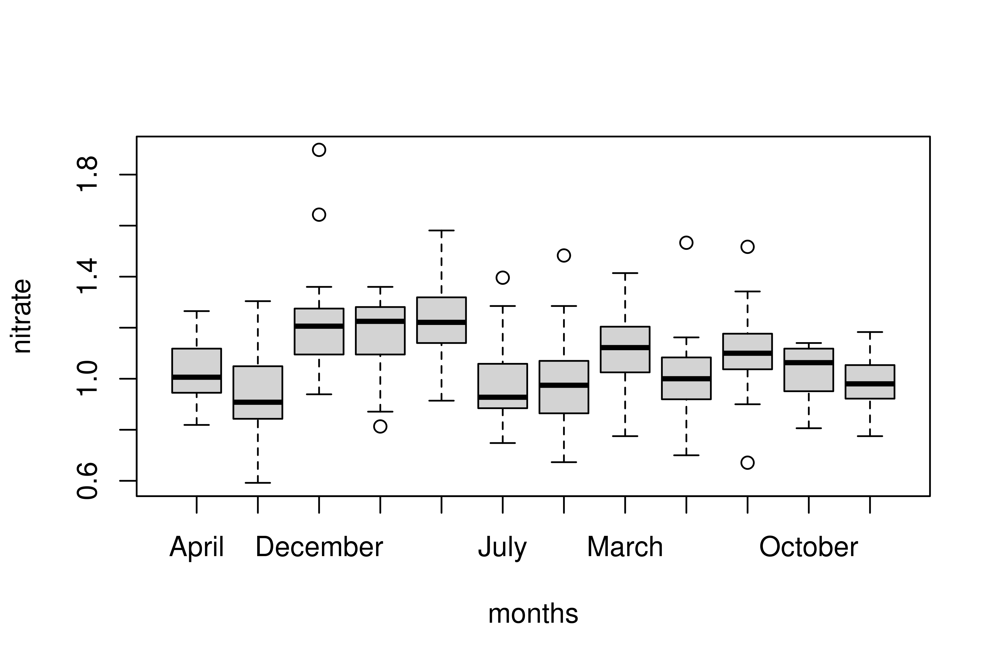
Seasonal Hybrid ESD algorithm
You’ve identified a repeating seasonal cycle in the nitrate data, with a period of 12 months. You are now ready to apply the Seasonal-Hybrid ESD algorithm to find out if there are anomalies present in the data.
# Run Seasonal-Hybrid ESD for nitrate concentrationsAnomalyDetectionVec(river$nitrate,period =12, direction ='both', plot = T)
The Seasonal-Hybrid ESD algorithm provides some useful output for understanding where the anomalies occur within the data.
In particular, the AnomalyDetectionVec() function generates output as a list with the two elements
$anoms, a data frame containing the columns index and anoms $plot a plot of the time series with anomalies highlighted (if plot = T)
# Use Seasonal-Hybrid ESD for nitrate concentrationsriver_anomalies <-AnomalyDetectionVec(x = river$nitrate, period =12, direction ='both', plot = T)# Print the anomaliesriver_anomalies$anoms
index anoms
1 6 1.483
2 53 1.533
3 156 1.897
# Print the plotprint(river_anomalies$plot)
Seasonal-Hybrid ESD versus Grubbs’ test
Recall when using Grubbs’ test on the river nitrate data, that only row 156 was found to be anomalous, while Seasonal-Hybrid ESD identified 2 further high-valued anomalies. Which of the following provides the best explanation for the difference between the two approaches?
Spot on! Grubbs’ test can only take an extreme value as a candidate for an outlier, while Seasonal-Hybrid ESD explicitly accounts for the repeating seasonal patterns. Therefore, it is likely that the extra anomalies have been identified as extreme with respect to the seasonal pattern in the data.
Distance and density based anomaly detection
Exploring wine
Throughout this chapter, you’ll explore techniques for anomaly detection with a new data set called wine. Each row of this data set refers to a wine whose chemical composition is described by two numeric fields:
pH: how acidic the wine is alcohol: the wine’s alcohol content (%)
wine <-fread("data/wine.csv")wine <- wine[, .(pH, alcohol)]# View the contents of the wine datahead(wine)
# Scatterplot of wine pH against alcoholplot(pH ~ alcohol, data = wine)
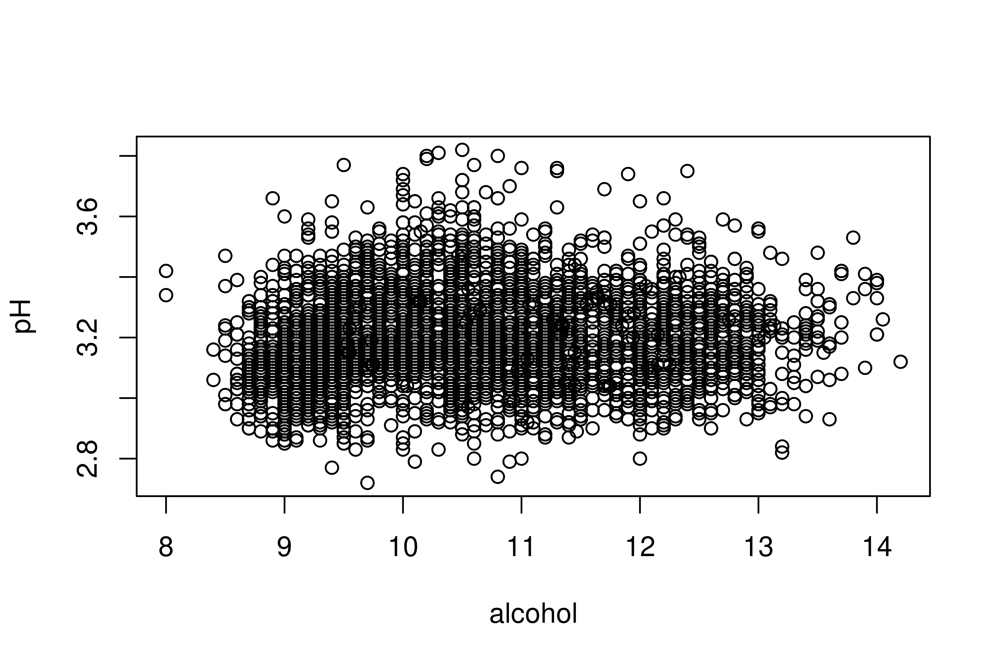
kNN distance matrix
The kNN distance matrix is a necessary prior step to producing the kNN distance score. The distance matrix has
rows, where is the number of data points columns, where is the user-chosen number of neighbors. The entry in row i and column j of the distance matrix is the distance between point i and its jth nearest neighbor.
# Calculate the 5 nearest neighbors distancewine_nn <-get.knn(wine, k =5)# View the distance matrixhead(wine_nn$nn.dist)
# Distance from wine 5 to nearest neighborwine_nn$nn.dist[5, 1]
[1] 0
# Row index of wine 5's nearest neighbor row_idx = wine_nn$nn.ind[5, 1]row_idx
[1] 9800
# Return data for wine 5 and its nearest neighborwine[c(5, row_idx), ] %>%data_table()
kNN distance score
Once the kNN distance matrix is available, the nearest neighbor distance score can be calculated by averaging the nearest neighbor distances for each point.
Large values of the distance score can be interpreted as indicating the presence of unusual or anomalous points.
# Calculate the 5 nearest neighbors distancewine_nn <-get.knn(wine, k =5)# Create score by averaging distanceswine_nnd <-rowMeans(wine_nn$nn.dist)hist(wine_nnd)
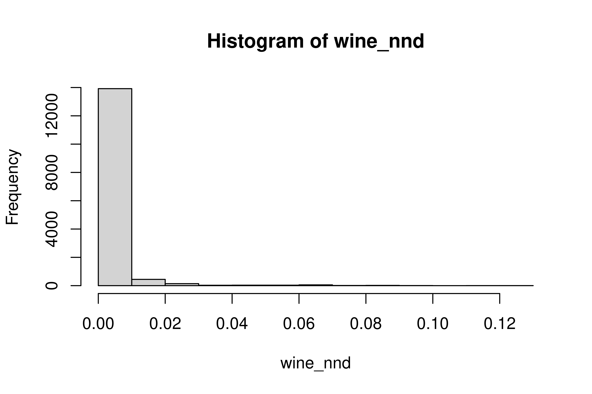
# Print row index of the most anomalous pointwhich.max(wine_nnd)
[1] 3919
Standardizing features
It is important to ensure that the feature inputs to the kNN distance calculation are standardized using the scale() function. Standardization ensures that features with large mean or variance do not disproportionately influence the kNN distance score.
# Without standardization, features have different scalessummary(wine)
pH alcohol
Min. :2.720 Min. : 8.00
1st Qu.:3.090 1st Qu.: 9.50
Median :3.180 Median :10.40
Mean :3.188 Mean :10.51
3rd Qu.:3.280 3rd Qu.:11.40
Max. :3.820 Max. :14.20
# Standardize the wine columnswine_scaled <-scale(wine)# Standardized features have similar means and quartilessummary(wine_scaled)
pH alcohol
Min. :-3.10130 Min. :-2.04323
1st Qu.:-0.65081 1st Qu.:-0.82425
Median :-0.05475 Median :-0.09286
Mean : 0.00000 Mean : 0.00000
3rd Qu.: 0.60755 3rd Qu.: 0.71979
Max. : 4.18393 Max. : 2.99522
Appending the kNN score
Now you’ve standardized your input features, it’s time to create the kNN distance score for the standardized wine data and append it as a new column.
In this exercise, the 5 nearest neighbor distance score is already available in the object wine_nnd. So that the score is easily available for visualization or further analysis, you’ll append the score as a new column to the unstandardized data.
# Calculate the 5 nearest neighbors distancewine_nn <-get.knn(wine_scaled, k =5)# Create score by averaging distanceswine_nnd <-rowMeans(wine_nn$nn.dist)# Print the 5-nearest neighbor distance scorewine_nnd[1:5]
[1] 0 0 0 0 0
# Append the score as a new column wine$score <- wine_nnd
Visualizing kNN distance score
The kNN distance score can be hard to interpret by simply eyeballing a set of values. It’s helpful to use scatterplots to visualize the kNN distance score to understand how the score works. When interpreting the plot, the relative size of the kNN distance score is more informative than the absolute value.
The wine data has been loaded with the kNN distance score appended from the previous exercise.
# Scatterplot showing pH, alcohol and kNN scoreplot(pH ~ alcohol, data = wine, cex =sqrt(score), pch =20)
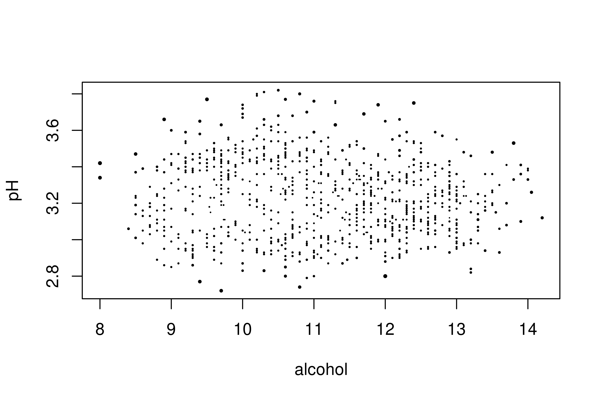
LOF calculation
kNN is useful for finding global anomalies, but is less able to surface local outliers. In this exercise, you’ll practice using the lof() function to calculate local outlier factors for the wine data.
lof() has the arguments:
x: the data for scoring, k: the number of neighbors used to calculate the LOF.
library(dbscan)# Calculate the LOF for wine datawine_lof <-lof(scale(wine), 5)# Append the LOF score as a new columnwine$score <- wine_lof
LOF visualization
As with kNN distance scoring, a scatterplot can be a useful visual aid for understanding why a low or high score has been assigned. In this exercise, the LOF score is visualized by scaling the points according to the size of the score. You should notice some differences in the location of points with highest scores compared to kNN distance.
The wine data for this exercise already contains the score column appended in the previous exercise.
# Scatterplot showing pH, alcohol and LOF scoreplot(pH ~ alcohol, data = wine, pch =20, cex =sqrt(score))
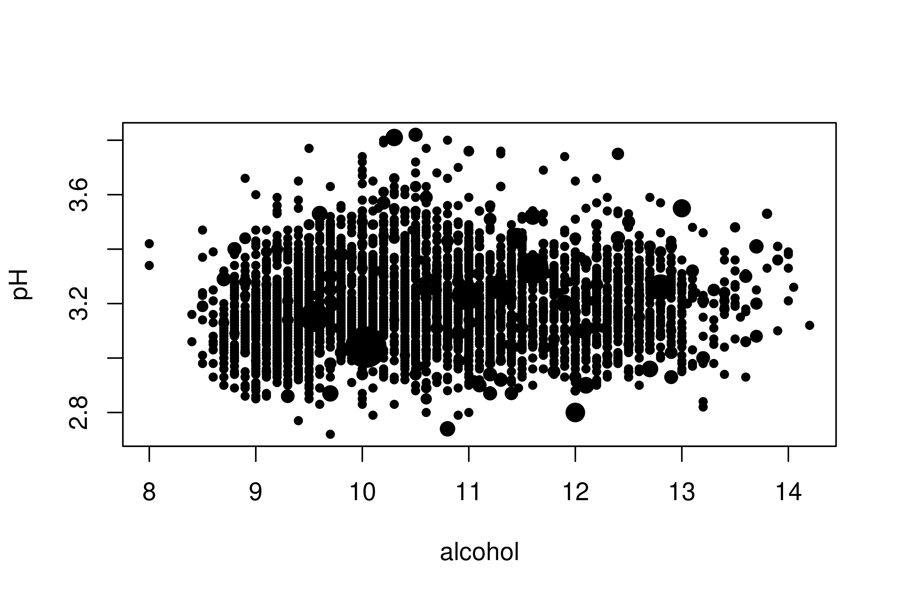
LOF vs kNN
It is common to look first at the points with highest anomaly scores before taking any action. When several algorithms are used, the points with highest scores may differ.
In this final exercise, you’ll calculate new LOF and kNN distance scores for the wine data, and print the highest scoring point for each.
# Scaled wine data#wine_scaled <- scale(wine)# Calculate and append kNN distance as a new columnwine_nn <-get.knn(wine_scaled, k =10)wine$score_knn <-rowMeans(wine_nn$nn.dist) # Calculate and append LOF as a new columnwine$score_lof <-lof(wine_scaled, k =10)# Find the row location of highest kNNwhich.max(wine$score_knn)
[1] 2957
# Find the row location of highest LOFwhich.max(wine$score_lof)
[1] 15
Isolation forest
Fit and predict with an isolation tree
The two most important functions to know when fitting an isolation tree are iForest() to fit and predict() to generate an isolation score. In this exercise, you’ll use these two functions to explore isolated points in the wine data set.
library(isofor)# Build an isolation tree wine_tree <-iForest(wine_scaled, nt =1)# Create isolation scorewine$tree_score <-predict(wine_tree, newdata = wine_scaled) # Histogram plot of the scoreshist(wine$tree_score, breaks =40)
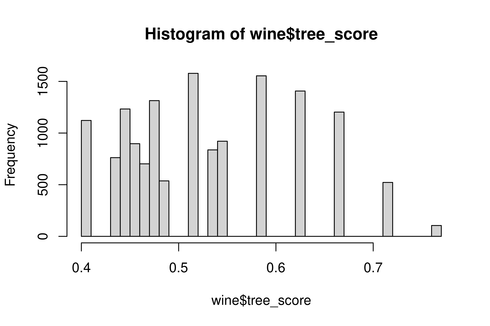
Isolation forest scores are values between 0 and 1. High scores near to 1 indicate possible anomalies, while scores between 0 and 0.5 do not.
Fit an isolation forest
An isolation forest is a collection of isolation trees, and uses exactly the same commands that you used in the previous lesson to grow a single isolation tree. In this exercise, you’ll practice fitting an isolation forest to the wine data.
When growing an isolation forest you should to pay particular attention to the number of trees and the number of points sampled to grow each tree.
# Fit isolation forestwine_forest <-iForest(wine, nt =100, phi =200)# Create isolation score from forestwine_score <-predict(wine_forest, newdata = wine)# Append score to the wine datawine$score <- wine_score
Checking convergence
The anomaly score from an isolation forest usually don’t change after a certain number of trees have been grown. This is called convergence, and can be checked by comparing the scores generated by forests with different numbers of trees. If the scores differ greatly, then this might suggest that more trees are required.
In this exercise, the scores for isolation forests with different numbers of trees have been already calculated for you and are contained in the data frame wine_scores.
wine <-fread("data/wine.csv")wine <- wine[, .(pH, alcohol)]# View the contents of the wine scores# Fit isolation forestwine_forest_2000 <-iForest(wine, nt =200, phi =200)trees_2000 <-predict(wine_forest_2000, newdata = wine)wine_forest_1000 <-iForest(wine, nt =100, phi =200)trees_1000 <-predict(wine_forest_1000, newdata = wine)wine_scores <-data.frame(trees_2000, trees_1000)head(wine_scores)
# Score scatterplot 2000 vs 1000 trees plot(trees_2000 ~ trees_1000, data = wine_scores)# Add reference line of equalityabline(a =0, b =1)
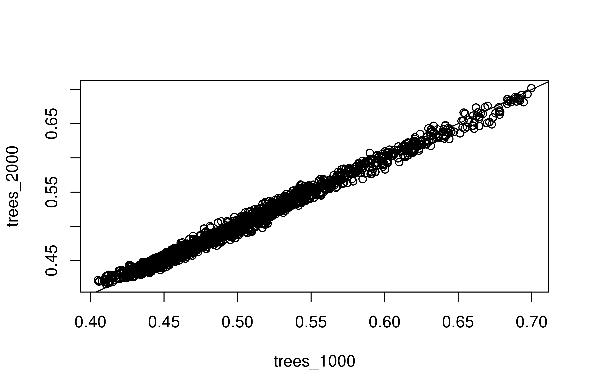
A grid of points
In the video, you saw how it can be instructive to use a contour plot over a grid of points to see what the anomaly score might have been at locations other than where the data occurred.
In this exercise you’ll create and visualize a grid of points across the region of interest. The grid you create will be used in the exercise that follows to visualize predicted isolation scores.
# Sequence of values for pH and alcoholph_seq <-seq(min(wine$pH), max(wine$pH), length.out =25)alcohol_seq <-seq(min(wine$alcohol), max(wine$alcohol), length.out =25)# Create a data frame of grid coordinateswine_grid <-expand.grid(pH = ph_seq, alcohol = alcohol_seq)# Visualise the grid using a scatterplotplot(pH~alcohol, data = wine_grid, pch =20)
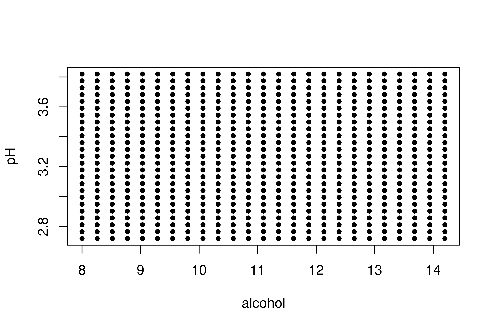
Prediction over a grid
In this exercise, you’ll use an isolation forest to obtain an anomaly score for the grid of points you created in the last exercise. Getting the anomaly score is the final preparatory step required to visualize the isolation scores.
The data frame wine_grid and fitted isolation forest wine_forest from the previous exercise are preloaded.
# Calculate isolation score at grid locationswine_grid$score <-predict(wine_forest_2000, wine_grid)
Anomaly contours
You now have the key ingredients to produce a contour plot, which is a powerful tool for viewing how the anomaly score varies across the region spanned by the data points.
The wine_grid data from the previous exercise has been preloaded for you to use.
library(lattice)# Contour plot of isolation scorescontourplot(score ~ pH + alcohol, wine_grid, region =TRUE)
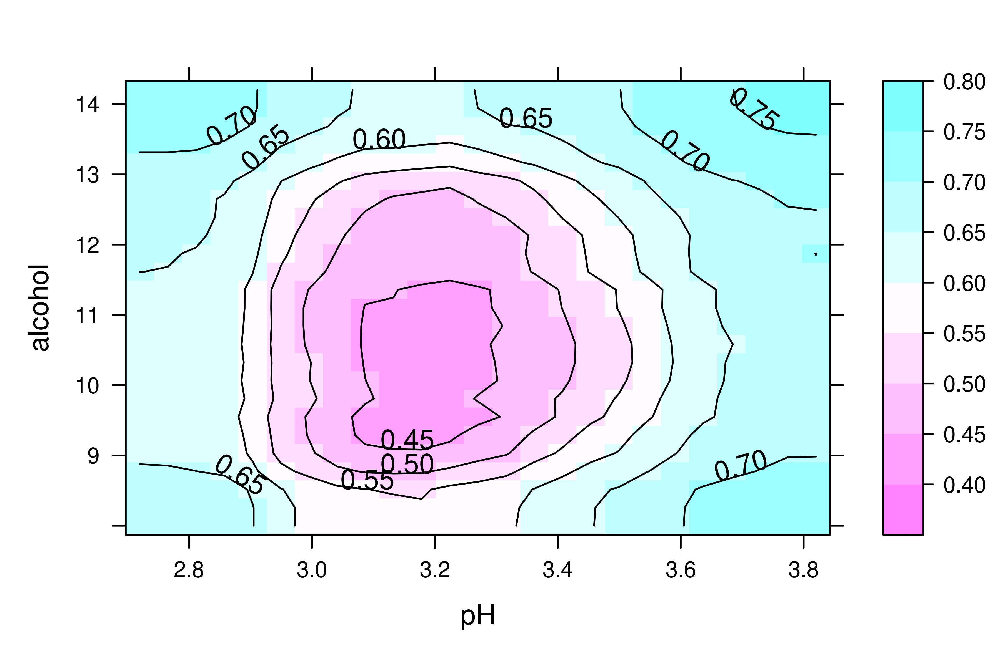
Comparing performance
Thyroid data
In this chapter, you’ll explore a new data set called thyroid. These data contain examples of thyroid hormone measurements for 1000 patients, and a column called label indicating the presence of thyroid disease. It is expected that unusual hormone measurements can be used to detect disease.
The overall goal is to determine whether an anomaly score based on hormone measurements could be used to detect thyroid disease. In this exercise, you’ll use plotting techniques to visually assess the distribution of thyroid disease.
thyroid <-fread("data/thyroid.csv")# View contents of thryoid datahead(thyroid)
# Proportion of thyroid casesprop_disease <-22/(978+22)
Visualizing thyroid disease
In previous chapters, we considered data with two or fewer features. As the number of features increases, it becomes harder to visually assess whether individual points are anomalous.
In cases where anomaly labels are available, it is important to use scatterplots to visualize how the distribution of anomalies varies with different combinations of features.
# Scatterplot showing TT4, TBG and anomaly labelsplot(TT4 ~ TBG, data = thyroid, pch =20, col = label +1)
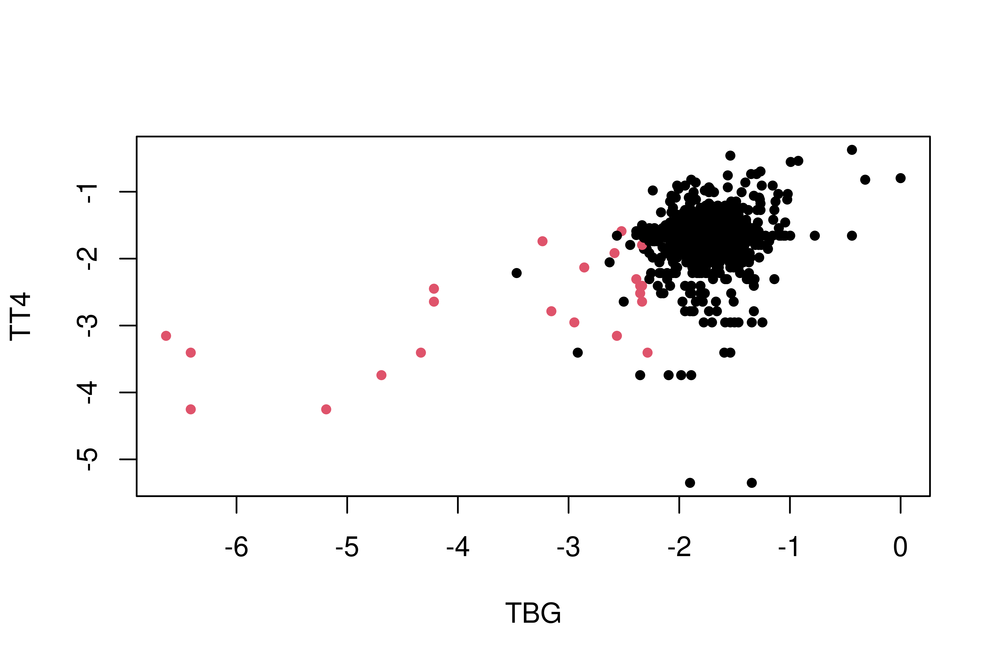
The disease cases seem to occur at extreme values of the hormone measurements. Next you’ll build an anomaly score to capture this!
Anomaly score
Your visualization suggested that thyroid disease could be detected from anomalous hormone measurements.
In this exercise you’ll use an isolation forest to generate an anomaly score for thyroid levels, and compare the resulting score against the true disease status.
# Fit isolation forestthyroid_xdf <- thyroid[, .SD, .SDcols =!"label"]thyroid_forest <-iForest(thyroid[, .SD, .SDcols =!"label"], nt =200, phi =100)# Anomaly score thyroid$iso_score <-predict(thyroid_forest, thyroid[, -1])# Boxplot of the anomaly score against labelsboxplot(iso_score ~ label, data = thyroid, col ="olivedrab4")
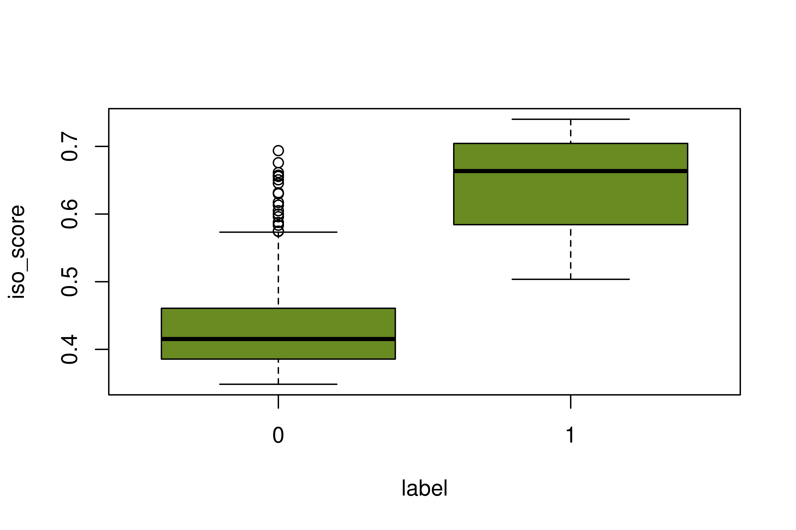
The boxplot showed that the anomaly scores were generally higher for the thyroid disease cases. This adds further weight to the claim that the disease cases could be detected from anomalous hormone levels.
Binarized scores
It’s worthwhile to compare the performance of more than one anomaly detection algorithm before deciding which to use.
In this exercise, you’ll construct a pair of binary anomaly scores based on local outlier factor (LOF) and the isolation forest. The isolation score vector iso_score generated in the previous exercise is preloaded for you to use.
iso_score <- thyroid$iso_score# Scale the measurement columns of thyroidscaled_thyroid_measurements <-scale(thyroid_xdf)# Create a LOF score for the measurementslof_score <-lof(scaled_thyroid_measurements, k =10)# Calculate high threshold for lof_scorehigh_lof <-quantile(lof_score, probs =0.98) # Append binary LOF score to thyroid datathyroid$binary_lof <-as.numeric(lof_score >= high_lof)# Calculate high threshold for iso_scorehigh_iso <-quantile(iso_score, probs =0.98) # Append binary isolation score to thyroid datathyroid$binary_iso <-as.numeric(iso_score> high_iso )
Although the 98th percentile was chosen here, other thresholds could have been used. The choice might be constrained by the number of potential anomalies you have time to check, or the cost of missing an anomaly.
Cross-tabulate binary scores
The table() function tallies the number of occurrences of combinations of values across one or more vectors. The orientation of the output table depends on the order that the input vectors are specified. For example in the table
table(currency, country)
country
currency UK USA $ 0 1 £ 1 0 the rows are indexed by currency because this appears first in the table() function.
# Tabulate agreement of label and binary isolation score table(thyroid$label, thyroid$binary_iso)
0 1
0 971 7
1 9 13
# Tabulate agreement of label and binary LOF score table(thyroid$label, thyroid$binary_lof)
0 1
0 958 20
1 22 0
# Proportion of binary_iso and label that agreeiso_prop <-mean(thyroid$label == thyroid$binary_iso)# Proportion of binary_lof and label that agreelof_prop <-mean(thyroid$label == thyroid$binary_lof)
Although the measure of agreement is intuitive, it can be misleadingly high when anomalies are very rare. In the next exercise, you’ll try other ways to quantify the success of the algorithm.
Thyroid precision and recall
Cross-tabulating the agreement between a binary score and a known label is a great way to understand how well the algorithm performs. Precision and recall are two further measures based on the table that give more insight into how well the score performs.
In this exercise, you’ll explore precision and recall using the thyroid data. The binary_lof and binary_iso scores created in the previous exercises are available to use as columns in the thyroid data. The code used to tabulate agreements in the previous exercise is also included.
# Tabulation for the binary isolation scoretable(thyroid$label, thyroid$binary_iso)
0 1
0 971 7
1 9 13
# Precision for the isolation scoreprecision_iso <-12/ (8+12)# Recall for the isolation scorerecall_iso <-12/ (10+12)# Tabulation for the binary lof scoretable(thyroid$label, thyroid$binary_lof)
0 1
0 958 20
1 22 0
# Precision for the binary lof scoreprecision_lof <-0/ (20+0)# Recall for the binary lof scorerecall_lof <-0/ (22+0)
Converting character to factor
Both LOF and isolation forest can be trained using data containing categorical features, but it’s easier if these are converted to factors first.
In this exercise, you’ll revisit the thyroid data which contains some additional categorical features that will need to be converted.
# Print the column classes in thyroidsapply(X = thyroid, FUN = class)
# Convert column with character class to factorthyroid$age <-as.factor(thyroid$age)thyroid$sex <-as.factor(thyroid$sex)# Check that all columns are factor or numericsapply(X = thyroid, FUN = class)
label TSH T3 TT4 T4U FTI TBG
"integer" "numeric" "numeric" "numeric" "numeric" "numeric" "numeric"
iso_score binary_lof binary_iso age sex
"numeric" "numeric" "numeric" "factor" "factor"
Isolation forest with factors
As you saw in the video, an isolation forest can accept categorical features as input, but only if they are encoded as factor variables.
In this exercise, the thyroid data you edited in the previous exercise is preloaded. To be extra careful, you should first check that all of the features are numeric or factor before attempting to train an isolation forest.
# Check the class of age columnclass(thyroid$age)
[1] "factor"
# Check the class of sex columnclass(thyroid$sex)
[1] "factor"
# Fit an isolation forest with 100 treesthyroid_for <-iForest(thyroid[,-1], 100)
Being able to incorporate categorical features greatly extends the range of applications in which isolation forests can be used.
LOF with factors
The lof() function can accept either a numeric data frame or a distance matrix as input to calculate LOF scores. In this exercise, you’ll practice calculating a distance matrix using Gower’s distance, which can then be passed to the lof() function for scoring.
As in the previous exercise, the thyroid data with character columns converted to factors has been preloaded for you to use.
# Calculate Gower's distance matrixlibrary(cluster)thyroid_dist <-daisy(thyroid[, -1], metric ="gower")# Generate LOF scores for thyroid datathyroid_lof <-lof(thyroid_dist, k =10)# Range of values in the distance matrixrange(as.matrix(thyroid_dist))